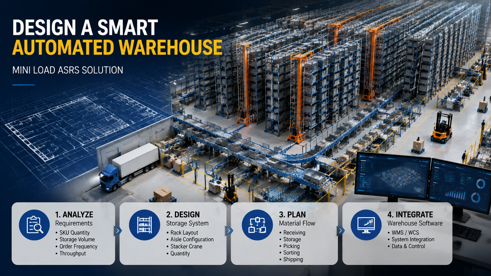

How to Design a High SKU Automated Warehouse with Mini Load ASRS

Summary
Complete Planning Approach for High SKU Warehouse Automation
Designing an automated warehouse is not simply about selecting storage equipment.
For companies managing thousands of SKUs, the biggest challenge is creating a complete warehouse operation system that connects:
Storage capacity
Material flow
Picking efficiency
Software management
Future expansion
A successful Mini Load ASRS project starts with warehouse planning before equipment selection.
The correct approach is:
Warehouse Requirement Analysis
↓
Storage System Design
↓
Material Flow Planning
↓
Software Integration
↓
Automated Warehouse Implementation
This article explains how companies can design a high SKU automated warehouse using Mini Load ASRS technology and why professional project integration is critical for successful automation.
Technology
- Mini Load ASRS Technology for High SKU Warehouse Design
- Mini Load ASRS is an automated storage and retrieval solution designed for warehouses requiring:
- Large numbers of SKUs
- High storage density
- Frequent picking operations
- Fast order fulfillment
- A complete Mini Load ASRS warehouse typically integrates:
- Automated storage racks
- High-speed stacker cranes
- Storage bins
- Conveyor systems
- Goods-to-person picking stations
- Warehouse Management System (WMS)
- Warehouse Control System (WCS/WES)
- The technology transforms warehouse operation from:
- Manual storage and searching
- ↓
- Automated storage and intelligent retrieval
- The purpose is not only to automate equipment movement
- but to create an optimized warehouse operation system.
Challenge
Why High SKU Warehouses Need Professional Planning
Many companies think warehouse automation starts with purchasing equipment.
However, an automated warehouse project is a complete system engineering process.
Without proper planning, companies may face problems such as:
Insufficient storage capacity
Inefficient material flow
Low picking efficiency
Poor equipment utilization
Difficult future expansion
A successful automated warehouse must answer several key questions:
How many SKUs need to be stored?
How much inventory capacity is required?
How fast must products be retrieved?
How should goods move through the warehouse?
How should automation systems communicate with business software?
Challenge 1: Increasing SKU Complexity
Modern businesses often manage thousands or even tens of thousands of product variations.
Different SKUs may have different:
Sizes
Weights
Storage requirements
Picking frequencies
A warehouse design must consider these differences from the beginning.
Challenge 2: Limited Warehouse Space
Many companies need to increase storage capacity without expanding buildings.
Poor warehouse layout can waste valuable space.
Automated warehouse design must maximize:
Vertical space utilization
Storage density
Equipment efficiency
Challenge 3: Balancing Storage and Throughput
A warehouse is not only a storage location.
It must continuously handle:
Receiving
Storage
Retrieval
Picking
Shipping
A good ASRS warehouse layout must balance storage capacity with operational speed.
Solution
Step 1: Analyze Warehouse Requirements
Understanding Business Requirements Before Designing the System
The first step of automated warehouse design is understanding the customer's actual operation requirements.
The system design should be based on:
Product characteristics
Business growth plans
Warehouse operation targets
SKU Quantity Analysis
The number of SKUs directly affects:
Storage locations
Bin quantity
Warehouse size
System configuration
A warehouse with 500 SKUs and a warehouse with 50,000 SKUs require completely different automation strategies.
Storage Volume Analysis
Important factors include:
Current inventory volume
Maximum inventory level
Seasonal inventory changes
Future growth requirements
The goal is to design a warehouse that supports both current and future needs.
Order Frequency Analysis
Different products have different movement frequencies.
High-frequency products may require:
Faster retrieval
Optimized storage locations
More efficient picking processes
Low-frequency products may prioritize:
Storage density
Space utilization
Throughput Requirement Analysis
The system must consider:
Daily order volume
Peak operation periods
Required retrieval speed
Picking station capacity
Throughput requirements directly influence equipment configuration.
Step 2: Design Storage System
Creating the Right ASRS Warehouse Layout
After analyzing warehouse requirements, the next step is designing the storage system.
The storage design includes:
Rack layout
Number of aisles
Stacker crane quantity
Bin configuration
Rack Layout Design
A proper rack layout determines:
Storage density
Equipment movement efficiency
Warehouse space utilization
The design should consider:
Warehouse dimensions
Product characteristics
Operational workflow
Number of ASRS Aisles
The number of aisles depends on:
Storage capacity
Throughput requirements
Required redundancy
More aisles can provide:
Higher processing capacity
Better operational flexibility
Stacker Crane Configuration
Stacker crane quantity affects:
Storage speed
Retrieval performance
System investment
The configuration should match actual warehouse requirements rather than simply increasing equipment quantity.
Step 3: Design Material Flow
Creating an Efficient Warehouse Operation Process
A warehouse automation system is successful only when material movement is optimized.
The complete material flow includes:
Receiving
↓
Storage
↓
Picking
↓
Sorting
↓
Shipping
Receiving Process Design
The receiving area should connect smoothly with:
Inspection area
Identification system
Storage system
Products should be correctly registered before entering automated storage.
Storage Process Design
After identification, products are transported automatically to assigned storage locations.
The system manages:
Storage position
Inventory information
Retrieval priority
Picking Process Design
For high SKU warehouses, goods-to-person picking is commonly used.
The process:
Order received
↓
System identifies required products
↓
ASRS retrieves storage bins
↓
Bins delivered to picking station
↓
Operator completes picking
Sorting Process Design
After picking, products may require sorting according to:
Customer orders
Delivery routes
Product categories
Automated sorting improves order processing efficiency.
Shipping Process Design
The outbound process connects:
Completed orders
Packaging area
Shipping area
A well-designed workflow reduces unnecessary movement.
Step 4: Integrate Warehouse Software
Building an Intelligent Warehouse Management System
Modern automated warehouses require software integration.
Equipment automation alone cannot achieve efficient warehouse operation.
A complete system usually includes:
WMS (Warehouse Management System)
Responsible for:
Inventory management
Order processing
SKU tracking
Warehouse planning
WCS/WES (Warehouse Control and Execution System)
Responsible for:
Equipment communication
Task scheduling
Workflow optimization
Real-time operation control
ERP Integration
For larger companies, warehouse systems can connect with enterprise management platforms.
This enables:
Better production planning
Improved inventory visibility
More efficient supply chain management
Workflow & Layout
Complete High SKU Automated Warehouse Design Process
A professional warehouse automation project follows a structured process:
Phase 1: Requirement Analysis
Collect:
SKU information
Storage requirements
Order data
Throughput targets
↓
Phase 2: Warehouse Layout Design
Develop:
Storage arrangement
ASRS configuration
Equipment positioning
Material flow
↓
Phase 3: Automation System Integration
Connect:
ASRS equipment
Conveyor systems
Picking stations
Warehouse software
↓
Phase 4: Testing and Optimization
Complete:
System commissioning
Performance testing
Operation optimization
Results & ROI
- Business Value of Professional ASRS Warehouse Design
- A well-designed automated warehouse provides long-term operational benefits.
- Higher Storage Efficiency
- Optimized layouts maximize warehouse space utilization.
- Companies can increase inventory capacity without expanding buildings.
- Faster Order Processing
- Efficient material flow and automated retrieval reduce order processing time.
- Reduced Operational Complexity
- Integrated automation reduces manual coordination requirements.
- Better Inventory Management
- Digital systems provide:
- Real-time inventory visibility
- Accurate product tracking
- Better decision-making
- Future Expansion Capability
- Professional design allows companies to expand automation capacity as business grows.
Equipment List
- Main Components of a High SKU Mini Load ASRS Warehouse
- A complete automated warehouse solution may include:
- Mini Load ASRS Storage System
- Functions:
- Automated bin storage
- High-density inventory management
- Automatic retrieval
- High-Speed Stacker Cranes
- Functions:
- Bin transportation
- Precise storage and retrieval
- Continuous operation
- Automated Storage Racks
- Functions:
- Vertical space utilization
- Storage location management
- Conveyor Transportation System
- Functions:
- Connecting warehouse areas
- Automated product movement
- Goods-to-Person Picking Stations
- Functions:
- Efficient order picking
- Reduced operator movement
- WMS/WCS Software Platform
- Functions:
- Warehouse management
- Equipment control
- Data monitoring
Project Overview / Opening
Warehouse Automation Starts with Planning, Not Equipment
Many companies begin automation projects by asking:
"Which ASRS equipment should we buy?"
However, the correct question is:
"How should we design the warehouse system to achieve our business goals?"
A successful automated warehouse requires integration between:
Business requirements
Warehouse layout
Storage technology
Material flow
Software systems
Mini Load ASRS is only one part of the complete solution.
The real value comes from designing a warehouse system that operates efficiently from receiving to shipping.
Key Points
- Important Considerations for High SKU Automated Warehouse Design
- Warehouse automation is a system project, not equipment purchasing.
- The right solution requires planning before selecting machines.
- SKU characteristics determine warehouse design.
- Product quantity, size, and movement frequency directly affect system configuration.
- Material flow optimization is critical.
- Efficient movement between receiving, storage, picking, and shipping improves warehouse performance.
- Software integration creates intelligent operation.
- WMS and WCS systems connect warehouse equipment with business processes.
- Professional project integration reduces implementation risks.
- Experienced planning helps avoid:
- Layout problems
- Capacity issues
- Inefficient workflows
Implementation / Workflow
From Concept Design to Automated Warehouse Delivery
A complete ASRS project implementation includes:
Step 1: Customer Requirement Study
Analyze:
Warehouse objectives
Product information
Operational requirements
Step 2: Solution Design
Develop:
Warehouse layout
Automation architecture
Equipment configuration
Step 3: Supplier Coordination
Manage:
Equipment selection
Manufacturing coordination
Technical communication
Step 4: System Integration
Connect:
Mechanical systems
Electrical systems
Software platforms
Step 5: Testing and Delivery
Complete:
Factory testing
System commissioning
Project handover
Customer Value / Results
Building Competitive Automated Warehouse Infrastructure
With professional Mini Load ASRS planning, customers achieve:
Improved Warehouse Performance
A well-designed system improves storage and order processing efficiency.
Lower Long-Term Operating Costs
Automation reduces repetitive manual operations.
Better Resource Utilization
Warehouse space, equipment, and labor resources are optimized.
Stronger Supply Chain Capability
Faster and more accurate warehouse operations improve customer service.
Sustainable Business Growth
The automated warehouse becomes a foundation for future expansion.
Conclusion / Next Step
Design the Right Automated Warehouse Solution Before Investing
High SKU warehouse automation is not simply about buying storage equipment.
The success of an ASRS project depends on:
Accurate requirement analysis
Professional warehouse layout
Efficient material flow
Reliable software integration
A properly designed Mini Load ASRS system helps companies transform warehouse operations and build long-term competitiveness.
13ASRS works as a China Industrial Automation Project Integration Partner, helping global customers design, source, integrate, and deliver customized warehouse automation projects.
If you are planning a high SKU automated warehouse project, we can help evaluate:
Warehouse layout
ASRS system configuration
Automation strategy
Investment requirements
Contact us to start your automated warehouse planning process.
SEO Title
How to Design a High SKU Automated Warehouse with Mini Load ASRS
SEO Description
Complete Planning Approach for High SKU Warehouse Automation
Designing an automated warehouse is not simply about selecting storage equipment.
For companies managing thousands of SKUs, the biggest challenge is creating a complete warehouse operation system that connects:
Storage capacity
Material flow
Picking efficiency
Software management
Future expansion
A successful Mini Load ASRS project starts with warehouse planning before equipment selection.
The correct approach is:
Warehouse Requirement Analysis
↓
Storage System Design
↓
Material Flow Planning
↓
Software Integration
↓
Automated Warehouse Implementation
This article explains how companies can design a high SKU automated warehouse using Mini Load ASRS technology and why professional project integration is critical for successful automation.
Related Blog
Start with Your Business Challenge
Tell us about your warehouse, factory, or production requirements. We'll help you explore practical automation solutions and relevant project references.